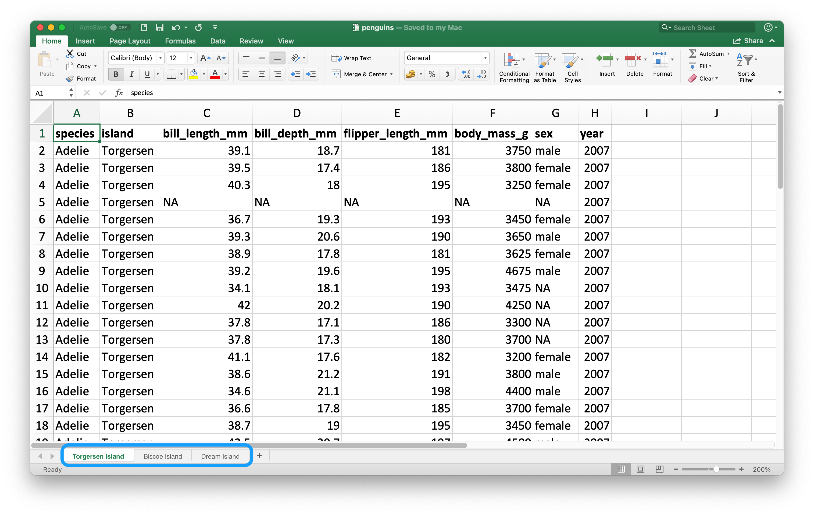
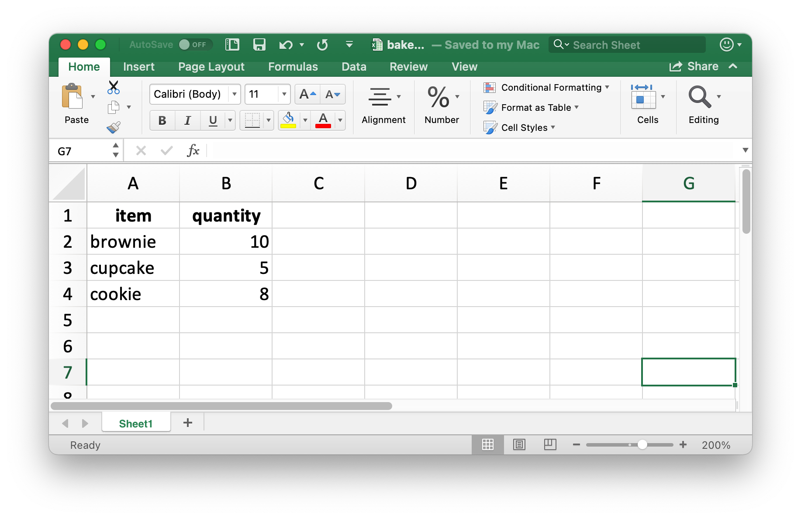
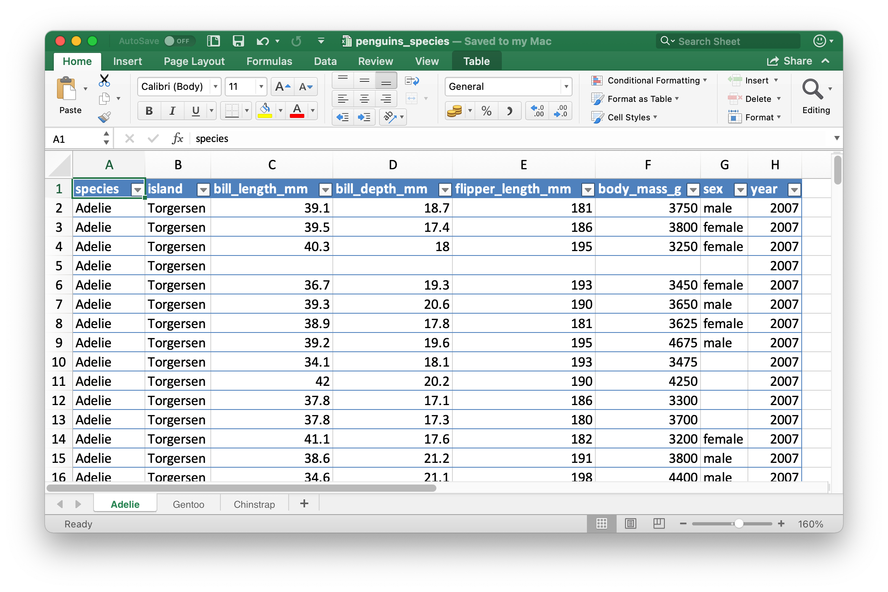

23 Spreadsheets
You are reading the work-in-progress second edition of R for Data Science. This chapter is currently a dumping ground for ideas, and we don’t recommend reading it. You can find the complete first edition at https://r4ds.had.co.nz.
23.1 Introduction
So far you have learned about importing data from plain text files, e.g. .csv and .tsv files. Sometimes you need to analyze data that lives in a spreadsheet. In this chapter we will introduce you to tools for working with data in Excel spreadsheets and Google Sheets. This will build on much of what you’ve learned in Chapter 8 and Chapter 22, but we will also discuss additional considerations and complexities when working with data from spreadsheets.
If you or your collaborators are using spreadsheets for organizing data, we strongly recommend reading the paper “Data Organization in Spreadsheets” by Karl Broman and Kara Woo: https://doi.org/10.1080/00031305.2017.1375989. The best practices presented in this paper will save you much headache down the line when you import the data from a spreadsheet into R to analyse and visualise.
23.2 Excel
23.2.1 Prerequisites
In this chapter, you’ll learn how to load data from Excel spreadsheets in R with the readxl package. This package is non-core tidyverse, so you need to load it explicitly but it is installed automatically when you install the tidyverse package.
xlsx and XLConnect can be used for reading data from and writing data to Excel spreadsheets. However, these two packages require Java installed on your machine and the rJava package. Due to potential challenges with installation, we recommend using alternative packages we’ve introduced in this chapter.
23.2.2 Getting started
Most of readxl’s functions allow you to load Excel spreadsheets into R:
-
read_xls()reads Excel files withxlsformat. -
read_xlsx()read Excel files withxlsxformat. -
read_excel()can read files with bothxlsandxlsxformat. It guesses the file type based on the input.
These functions all have similar syntax just like other functions we have previously introduced for reading other types of files, e.g. read_csv(), read_table(), etc. For the rest of the chapter we will focus on using read_excel().
23.2.3 Reading spreadsheets
Figure 23.1 shows what the spreadsheet we’re going to read into R looks like in Excel.

The first argument to read_excel() is the path to the file to read.
students <- read_excel("data/students.xlsx")read_excel() will read the file in as a tibble.
students
#> # A tibble: 6 × 5
#> `Student ID` `Full Name` favourite.food mealPlan AGE
#> <dbl> <chr> <chr> <chr> <chr>
#> 1 1 Sunil Huffmann Strawberry yoghurt Lunch only 4
#> 2 2 Barclay Lynn French fries Lunch only 5
#> 3 3 Jayendra Lyne N/A Breakfast and lunch 7
#> 4 4 Leon Rossini Anchovies Lunch only <NA>
#> 5 5 Chidiegwu Dunkel Pizza Breakfast and lunch five
#> 6 6 Güvenç Attila Ice cream Lunch only 6We have six students in the data and five variables on each student. However there are a few things we might want to address in this dataset:
-
The column names are all over the place. You can provide column names that follow a consistent format; we recommend
snake_caseusing thecol_namesargument.read_excel( "data/students.xlsx", col_names = c("student_id", "full_name", "favourite_food", "meal_plan", "age") ) #> # A tibble: 7 × 5 #> student_id full_name favourite_food meal_plan age #> <chr> <chr> <chr> <chr> <chr> #> 1 Student ID Full Name favourite.food mealPlan AGE #> 2 1 Sunil Huffmann Strawberry yoghurt Lunch only 4 #> 3 2 Barclay Lynn French fries Lunch only 5 #> 4 3 Jayendra Lyne N/A Breakfast and lunch 7 #> 5 4 Leon Rossini Anchovies Lunch only <NA> #> 6 5 Chidiegwu Dunkel Pizza Breakfast and lunch five #> # … with 1 more row #> # ℹ Use `print(n = ...)` to see more rowsUnfortunately, this didn’t quite do the trick. You now have the variable names we want, but what was previously the header row now shows up as the first observation in the data. You can explicitly skip that row using the
skipargument.read_excel( "data/students.xlsx", col_names = c("student_id", "full_name", "favourite_food", "meal_plan", "age"), skip = 1 ) #> # A tibble: 6 × 5 #> student_id full_name favourite_food meal_plan age #> <dbl> <chr> <chr> <chr> <chr> #> 1 1 Sunil Huffmann Strawberry yoghurt Lunch only 4 #> 2 2 Barclay Lynn French fries Lunch only 5 #> 3 3 Jayendra Lyne N/A Breakfast and lunch 7 #> 4 4 Leon Rossini Anchovies Lunch only <NA> #> 5 5 Chidiegwu Dunkel Pizza Breakfast and lunch five #> 6 6 Güvenç Attila Ice cream Lunch only 6 -
In the
favourite_foodcolumn, one of the observations isN/A, which stands for “not available” but it’s currently not recognized as anNA(note the contrast between thisN/Aand the age of the fourth student in the list). You can specify which character strings should be recognized asNAs with thenaargument. By default, only""(empty string, or, in the case of reading from a spreadsheet, an empty cell) is recognized as anNA.read_excel( "data/students.xlsx", col_names = c("student_id", "full_name", "favourite_food", "meal_plan", "age"), skip = 1, na = c("", "N/A") ) #> # A tibble: 6 × 5 #> student_id full_name favourite_food meal_plan age #> <dbl> <chr> <chr> <chr> <chr> #> 1 1 Sunil Huffmann Strawberry yoghurt Lunch only 4 #> 2 2 Barclay Lynn French fries Lunch only 5 #> 3 3 Jayendra Lyne <NA> Breakfast and lunch 7 #> 4 4 Leon Rossini Anchovies Lunch only <NA> #> 5 5 Chidiegwu Dunkel Pizza Breakfast and lunch five #> 6 6 Güvenç Attila Ice cream Lunch only 6 -
One other remaining issue is that
ageis read in as a character variable, but it really should be numeric. Just like withread_csv()and friends for reading data from flat files, you can supply acol_typesargument toread_excel()and specify the column types for the variables you read in. The syntax is a bit different, though. Your options are"skip","guess","logical","numeric","date","text"or"list".read_excel( "data/students.xlsx", col_names = c("student_id", "full_name", "favourite_food", "meal_plan", "age"), skip = 1, na = c("", "N/A"), col_types = c("numeric", "text", "text", "text", "numeric") ) #> Warning: Expecting numeric in E6 / R6C5: got 'five' #> # A tibble: 6 × 5 #> student_id full_name favourite_food meal_plan age #> <dbl> <chr> <chr> <chr> <dbl> #> 1 1 Sunil Huffmann Strawberry yoghurt Lunch only 4 #> 2 2 Barclay Lynn French fries Lunch only 5 #> 3 3 Jayendra Lyne <NA> Breakfast and lunch 7 #> 4 4 Leon Rossini Anchovies Lunch only NA #> 5 5 Chidiegwu Dunkel Pizza Breakfast and lunch NA #> 6 6 Güvenç Attila Ice cream Lunch only 6However, this didn’t quite produce the desired result either. By specifying that
ageshould be numeric, we have turned the one cell with the non-numeric entry (which had the valuefive) into anNA. In this case, we should read age in as"text"and then make the change once the data is loaded in R.students <- read_excel( "data/students.xlsx", col_names = c("student_id", "full_name", "favourite_food", "meal_plan", "age"), skip = 1, na = c("", "N/A"), col_types = c("numeric", "text", "text", "text", "text") ) students <- students |> mutate( age = if_else(age == "five", "5", age), age = parse_number(age) ) students #> # A tibble: 6 × 5 #> student_id full_name favourite_food meal_plan age #> <dbl> <chr> <chr> <chr> <dbl> #> 1 1 Sunil Huffmann Strawberry yoghurt Lunch only 4 #> 2 2 Barclay Lynn French fries Lunch only 5 #> 3 3 Jayendra Lyne <NA> Breakfast and lunch 7 #> 4 4 Leon Rossini Anchovies Lunch only NA #> 5 5 Chidiegwu Dunkel Pizza Breakfast and lunch 5 #> 6 6 Güvenç Attila Ice cream Lunch only 6
It took us multiple steps and trial-and-error to load the data in exactly the format we want, and this is not unexpected. Data science is an iterative process. There is no way to know exactly what the data will look like until you load it and take a look at it. Well, there is one way, actually. You can open the file in Excel and take a peek. That might be tempting, but it’s strongly not recommended. Instead, you should not be afraid of doing what we did here: load the data, take a peek, make adjustments to your code, load it again, and repeat until you’re happy with the result.
23.2.4 Reading individual sheets
An important feature that distinguishes spreadsheets from flat files is the notion of multiple sheets. Figure 23.2 shows an Excel spreadsheet with multiple sheets. The data come from the palmerpenguins package. Each sheet contains information on penguins from a different island where data were collected.

You can read a single sheet from a spreadsheet with the sheet argument in read_excel().
read_excel("data/penguins.xlsx", sheet = "Torgersen Island")
#> # A tibble: 52 × 8
#> species island bill_length_mm bill_depth_mm flipp…¹ body_…² sex year
#> <chr> <chr> <chr> <chr> <chr> <chr> <chr> <dbl>
#> 1 Adelie Torgersen 39.1 18.7 181 3750 male 2007
#> 2 Adelie Torgersen 39.5 17.399999999… 186 3800 fema… 2007
#> 3 Adelie Torgersen 40.299999999999997 18 195 3250 fema… 2007
#> 4 Adelie Torgersen NA NA NA NA NA 2007
#> 5 Adelie Torgersen 36.700000000000003 19.3 193 3450 fema… 2007
#> 6 Adelie Torgersen 39.299999999999997 20.6 190 3650 male 2007
#> # … with 46 more rows, and abbreviated variable names ¹flipper_length_mm,
#> # ²body_mass_g
#> # ℹ Use `print(n = ...)` to see more rowsSome variables that appear to contain numerical data are read in as characters due to the character string "NA" not being recognized as a true NA.
penguins_torgersen <- read_excel("data/penguins.xlsx", sheet = "Torgersen Island", na = "NA")
penguins_torgersen
#> # A tibble: 52 × 8
#> species island bill_length_mm bill_depth_mm flipper_l…¹ body_…² sex year
#> <chr> <chr> <dbl> <dbl> <dbl> <dbl> <chr> <dbl>
#> 1 Adelie Torgersen 39.1 18.7 181 3750 male 2007
#> 2 Adelie Torgersen 39.5 17.4 186 3800 fema… 2007
#> 3 Adelie Torgersen 40.3 18 195 3250 fema… 2007
#> 4 Adelie Torgersen NA NA NA NA <NA> 2007
#> 5 Adelie Torgersen 36.7 19.3 193 3450 fema… 2007
#> 6 Adelie Torgersen 39.3 20.6 190 3650 male 2007
#> # … with 46 more rows, and abbreviated variable names ¹flipper_length_mm,
#> # ²body_mass_g
#> # ℹ Use `print(n = ...)` to see more rowsHowever, we cheated here a bit. We looked inside the Excel spreadsheet, which is not a recommended workflow. Instead, you can use excel_sheets() to get information on all sheets in an Excel spreadsheet, and then read the one(s) you’re interested in.
excel_sheets("data/penguins.xlsx")
#> [1] "Torgersen Island" "Biscoe Island" "Dream Island"Once you know the names of the sheets, you can read them in individually with read_excel().
penguins_biscoe <- read_excel("data/penguins.xlsx", sheet = "Biscoe Island", na = "NA")
penguins_dream <- read_excel("data/penguins.xlsx", sheet = "Dream Island", na = "NA")In this case the full penguins dataset is spread across three sheets in the spreadsheet. Each sheet has the same number of columns but different numbers of rows.
We can put them together with bind_rows().
penguins <- bind_rows(penguins_torgersen, penguins_biscoe, penguins_dream)
penguins
#> # A tibble: 344 × 8
#> species island bill_length_mm bill_depth_mm flipper_l…¹ body_…² sex year
#> <chr> <chr> <dbl> <dbl> <dbl> <dbl> <chr> <dbl>
#> 1 Adelie Torgersen 39.1 18.7 181 3750 male 2007
#> 2 Adelie Torgersen 39.5 17.4 186 3800 fema… 2007
#> 3 Adelie Torgersen 40.3 18 195 3250 fema… 2007
#> 4 Adelie Torgersen NA NA NA NA <NA> 2007
#> 5 Adelie Torgersen 36.7 19.3 193 3450 fema… 2007
#> 6 Adelie Torgersen 39.3 20.6 190 3650 male 2007
#> # … with 338 more rows, and abbreviated variable names ¹flipper_length_mm,
#> # ²body_mass_g
#> # ℹ Use `print(n = ...)` to see more rowsIn Chapter 29 we’ll talk about ways of doing this sort of task without repetitive code .
23.2.5 Reading part of a sheet
Since many use Excel spreadsheets for presentation as well as for data storage, it’s quite common to find cell entries in a spreadsheet that are not part of the data you want to read into R. Figure 23.3 shows such a spreadsheet: in the middle of the sheet is what looks like a data frame but there is extraneous text in cells above and below the data.
![A look at the deaths spreadsheet in Excel. The spreadsheet has four rows on top that contain non-data information; the text 'For the same of consistency in the data layout, which is really a beautiful thing, I will keep making notes up here.' is spread across cells in these top four rows. Then, there is a data frame that includes information on deaths of 10 famous people, including their names, professions, ages, whether they have kids or not, date of birth and death. At the bottom, there are four more rows of non-data information; the text 'This has been really fun, but we're signing off now!' is spread across cells in these bottom four rows.](images/import-spreadsheets-deaths.png)
This spreadsheet is one of the example spreadsheets provided in the readxl package. You can use the readxl_example() function to locate the spreadsheet on your system in the directory where the package is installed. This function returns the path to the spreadsheet, which you can use in read_excel() as usual.
deaths_path <- readxl_example("deaths.xlsx")
deaths <- read_excel(deaths_path)
#> New names:
#> • `` -> `...2`
#> • `` -> `...3`
#> • `` -> `...4`
#> • `` -> `...5`
#> • `` -> `...6`
deaths
#> # A tibble: 18 × 6
#> `Lots of people` ...2 ...3 ...4 ...5 ...6
#> <chr> <chr> <chr> <chr> <chr> <chr>
#> 1 simply cannot resist writing <NA> <NA> <NA> <NA> some not…
#> 2 at the top <NA> of their sp…
#> 3 or merging <NA> <NA> <NA> cells
#> 4 Name Profession Age Has kids Date of birth Date of …
#> 5 David Bowie musician 69 TRUE 17175 42379
#> 6 Carrie Fisher actor 60 TRUE 20749 42731
#> # … with 12 more rows
#> # ℹ Use `print(n = ...)` to see more rowsThe top three rows and the bottom four rows are not part of the data frame.
We could skip the top three rows with skip. Note that we set skip = 4 since the fourth row contains column names, not the data.
read_excel(deaths_path, skip = 4)
#> # A tibble: 14 × 6
#> Name Profession Age `Has kids` `Date of birth` `Date of death`
#> <chr> <chr> <chr> <chr> <dttm> <chr>
#> 1 David Bowie musician 69 TRUE 1947-01-08 00:00:00 42379
#> 2 Carrie Fisher actor 60 TRUE 1956-10-21 00:00:00 42731
#> 3 Chuck Berry musician 90 TRUE 1926-10-18 00:00:00 42812
#> 4 Bill Paxton actor 61 TRUE 1955-05-17 00:00:00 42791
#> 5 Prince musician 57 TRUE 1958-06-07 00:00:00 42481
#> 6 Alan Rickman actor 69 FALSE 1946-02-21 00:00:00 42383
#> # … with 8 more rows
#> # ℹ Use `print(n = ...)` to see more rowsWe could also set n_max to omit the extraneous rows at the bottom.
read_excel(deaths_path, skip = 4, n_max = 10)
#> # A tibble: 10 × 6
#> Name Profession Age Has k…¹ `Date of birth` `Date of death`
#> <chr> <chr> <dbl> <lgl> <dttm> <dttm>
#> 1 David Bowie musician 69 TRUE 1947-01-08 00:00:00 2016-01-10 00:00:00
#> 2 Carrie Fisher actor 60 TRUE 1956-10-21 00:00:00 2016-12-27 00:00:00
#> 3 Chuck Berry musician 90 TRUE 1926-10-18 00:00:00 2017-03-18 00:00:00
#> 4 Bill Paxton actor 61 TRUE 1955-05-17 00:00:00 2017-02-25 00:00:00
#> 5 Prince musician 57 TRUE 1958-06-07 00:00:00 2016-04-21 00:00:00
#> 6 Alan Rickman actor 69 FALSE 1946-02-21 00:00:00 2016-01-14 00:00:00
#> # … with 4 more rows, and abbreviated variable name ¹`Has kids`
#> # ℹ Use `print(n = ...)` to see more rowsAnother approach is using cell ranges. In Excel, the top left cell is A1. As you move across columns to the right, the cell label moves down the alphabet, i.e. B1, C1, etc. And as you move down a column, the number in the cell label increases, i.e. A2, A3, etc.
The data we want to read in starts in cell A5 and ends in cell F15. In spreadsheet notation, this is A5:F15.
-
Supply this information to the
rangeargument:read_excel(deaths_path, range = "A5:F15") -
Specify rows:
read_excel(deaths_path, range = cell_rows(c(5, 15))) -
Specify cells that mark the top-left and bottom-right corners of the data – the top-left corner,
A5, translates toc(5, 1)(5th row down, 1st column) and the bottom-right corner,F15, translates toc(15, 6):read_excel(deaths_path, range = cell_limits(c(5, 1), c(15, 6)))
If you have control over the sheet, an even better way is to create a “named range”. This is useful within Excel because named ranges help repeat formulas easier to create and they have some useful properties for creating dynamic charts and graphs as well. Even if you’re not working in Excel, named ranges can be useful for identifying which cells to read into R. In the example above, the table we’re reading in is named Table1, so we can read it in with the following.
TO DO: Add this once reading in named ranges are implemented in readxl.
23.2.6 Data types
In CSV files, all values are strings. This is not particularly true to the data, but it is simple: everything is a string.
The underlying data in Excel spreadsheets is more complex. A cell can be one of five things:
A logical, like TRUE / FALSE
A number, like “10” or “10.5”
A date, which can also include time like “11/1/21” or “11/1/21 3:00 PM”
A string, like “ten”
A currency, which allows numeric values in a limited range and four decimal digits of fixed precision
When working with spreadsheet data, it’s important to keep in mind that how the underlying data is stored can be very different than what you see in the cell. For example, Excel has no notion of an integer. All numbers are stored as floating points, but you can choose to display the data with a customizable number of decimal points. Similarly, dates are actually stored as numbers, specifically the number of seconds since January 1, 1970. You can customize how you display the date by applying formatting in Excel. Confusingly, it’s also possible to have something that looks like a number but is actually a string (e.g. type '10 into a cell in Excel).
These differences between how the underlying data are stored vs. how they’re displayed can cause surprises when the data are loaded into R. By default readxl will guess the data type in a given column. A recommended workflow is to let readxl guess the column types, confirm that you’re happy with the guessed column types, and if not, go back and re-import specifying col_types as shown in Section 23.2.3.
Another challenge is when you have a column in your Excel spreadsheet that has a mix of these types, e.g. some cells are numeric, others text, others dates. When importing the data into R readxl has to make some decisions. In these cases you can set the type for this column to "list", which will load the column as a list of length 1 vectors, where the type of each element of the vector is guessed.
23.2.7 Data not in cell values
tidyxl is useful for importing non-tabular data from Excel files into R. For example, tidyxl doesn’t coerce a pivot table into a data frame. See https://nacnudus.github.io/spreadsheet-munging-strategies/ for more on strategies for working with non-tabular data from Excel.
23.2.8 Writing to Excel
Let’s create a small data frame that we can then write out. Note that item is a factor and quantity is an integer.
You can write data back to disk as an Excel file using the write_xlsx() from the writexl package.
Figure 23.4 shows what the data looks like in Excel. Note that column names are included and bolded. These can be turned off by setting col_names and format_headers arguments to FALSE.

Just like reading from a CSV, information on data type is lost when we read the data back in. This makes Excel files unreliable for caching interim results as well. For alternatives, see Section 8.5.
read_excel("data/bake-sale.xlsx")
#> # A tibble: 3 × 2
#> item quantity
#> <chr> <dbl>
#> 1 brownie 10
#> 2 cupcake 5
#> 3 cookie 823.2.9 Formatted output
The readxl package is a light-weight solution for writing a simple Excel spreadsheet, but if you’re interested in additional features like writing to sheets within a spreadsheet and styling, you will want to use the openxlsx package. Note that this package is not part of the tidyverse so the functions and workflows may feel unfamiliar. For example, function names are camelCase, multiple functions can’t be composed in pipelines, and arguments are in a different order than they tend to be in the tidyverse. However, this is ok. As your R learning and usage expands outside of this book you will encounter lots of different styles used in various R packages that you might need to use to accomplish specific goals in R. A good way of familiarizing yourself with the coding style used in a new package is to run the examples provided in function documentation to get a feel for the syntax and the output formats as well as reading any vignettes that might come with the package.
Below we show how to write a spreadsheet with three sheets, one for each species of penguins in the penguins data frame.
library(openxlsx)
library(palmerpenguins)
# Create a workbook (spreadsheet)
penguins_species <- createWorkbook()
# Add three sheets to the spreadsheet
addWorksheet(penguins_species, sheetName = "Adelie")
addWorksheet(penguins_species, sheetName = "Gentoo")
addWorksheet(penguins_species, sheetName = "Chinstrap")
# Write data to each sheet
writeDataTable(
penguins_species,
sheet = "Adelie",
x = penguins |> filter(species == "Adelie")
)
writeDataTable(
penguins_species,
sheet = "Gentoo",
x = penguins |> filter(species == "Gentoo")
)
writeDataTable(
penguins_species,
sheet = "Chinstrap",
x = penguins |> filter(species == "Chinstrap")
)This creates a workbook object:
penguins_species
#> A Workbook object.
#>
#> Worksheets:
#> Sheet 1: "Adelie"
#>
#>
#> Sheet 2: "Gentoo"
#>
#>
#> Sheet 3: "Chinstrap"
#>
#>
#>
#> Worksheet write order: 1, 2, 3
#> Active Sheet 1: "Adelie"
#> Position: 1And we can write this to this with saveWorkbook().
saveWorkbook(penguins_species, "data/penguins-species.xlsx")The resulting spreadsheet is shown in Figure 23.5. By default, openxlsx formats the data as an Excel table.

See https://ycphs.github.io/openxlsx/articles/Formatting.html for an extensive discussion on further formatting functionality for data written from R to Excel with openxlsx.
23.2.10 Exercises
- Recreate the
bake_saledata frame, write it out to an Excel file using thewrite.xlsx()function from the openxlsx package. - What happens if you try to read in a file with
.xlsxextension withread_xls()?
23.3 Google Sheets
23.3.1 Prerequisites
TO DO:
- use googlesheets4
- why 4?
23.3.2 Getting started
TO DO:
- reading from public sheet with
read_sheet()andread_range()